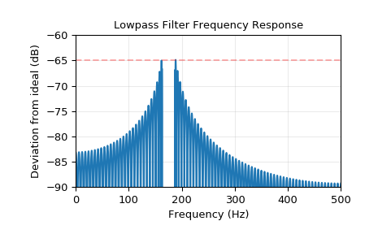

scipy.signal.kaiserord¶
-
scipy.signal.kaiserord(ripple, width)[source]¶ Determine the filter window parameters for the Kaiser window method.
The parameters returned by this function are generally used to create a finite impulse response filter using the window method, with either
firwinorfirwin2.- Parameters
- ripplefloat
Upper bound for the deviation (in dB) of the magnitude of the filter’s frequency response from that of the desired filter (not including frequencies in any transition intervals). That is, if w is the frequency expressed as a fraction of the Nyquist frequency, A(w) is the actual frequency response of the filter and D(w) is the desired frequency response, the design requirement is that:
abs(A(w) - D(w))) < 10**(-ripple/20)
for 0 <= w <= 1 and w not in a transition interval.
- widthfloat
Width of transition region, normalized so that 1 corresponds to pi radians / sample. That is, the frequency is expressed as a fraction of the Nyquist frequency.
- Returns
- numtapsint
The length of the Kaiser window.
- betafloat
The beta parameter for the Kaiser window.
See also
Notes
There are several ways to obtain the Kaiser window:
signal.kaiser(numtaps, beta, sym=True)signal.get_window(beta, numtaps)signal.get_window(('kaiser', beta), numtaps)
The empirical equations discovered by Kaiser are used.
References
Oppenheim, Schafer, “Discrete-Time Signal Processing”, pp.475-476.
Examples
We will use the Kaiser window method to design a lowpass FIR filter for a signal that is sampled at 1000 Hz.
We want at least 65 dB rejection in the stop band, and in the pass band the gain should vary no more than 0.5%.
We want a cutoff frequency of 175 Hz, with a transition between the pass band and the stop band of 24 Hz. That is, in the band [0, 163], the gain varies no more than 0.5%, and in the band [187, 500], the signal is attenuated by at least 65 dB.
>>> from scipy.signal import kaiserord, firwin, freqz >>> import matplotlib.pyplot as plt >>> fs = 1000.0 >>> cutoff = 175 >>> width = 24
The Kaiser method accepts just a single parameter to control the pass band ripple and the stop band rejection, so we use the more restrictive of the two. In this case, the pass band ripple is 0.005, or 46.02 dB, so we will use 65 dB as the design parameter.
Use
kaiserordto determine the length of the filter and the parameter for the Kaiser window.>>> numtaps, beta = kaiserord(65, width/(0.5*fs)) >>> numtaps 167 >>> beta 6.20426
Use
firwinto create the FIR filter.>>> taps = firwin(numtaps, cutoff, window=('kaiser', beta), ... scale=False, nyq=0.5*fs)
Compute the frequency response of the filter.
wis the array of frequencies, andhis the corresponding complex array of frequency responses.>>> w, h = freqz(taps, worN=8000) >>> w *= 0.5*fs/np.pi # Convert w to Hz.
Compute the deviation of the magnitude of the filter’s response from that of the ideal lowpass filter. Values in the transition region are set to
nan, so they won’t appear in the plot.>>> ideal = w < cutoff # The "ideal" frequency response. >>> deviation = np.abs(np.abs(h) - ideal) >>> deviation[(w > cutoff - 0.5*width) & (w < cutoff + 0.5*width)] = np.nan
Plot the deviation. A close look at the left end of the stop band shows that the requirement for 65 dB attenuation is violated in the first lobe by about 0.125 dB. This is not unusual for the Kaiser window method.
>>> plt.plot(w, 20*np.log10(np.abs(deviation))) >>> plt.xlim(0, 0.5*fs) >>> plt.ylim(-90, -60) >>> plt.grid(alpha=0.25) >>> plt.axhline(-65, color='r', ls='--', alpha=0.3) >>> plt.xlabel('Frequency (Hz)') >>> plt.ylabel('Deviation from ideal (dB)') >>> plt.title('Lowpass Filter Frequency Response') >>> plt.show()
